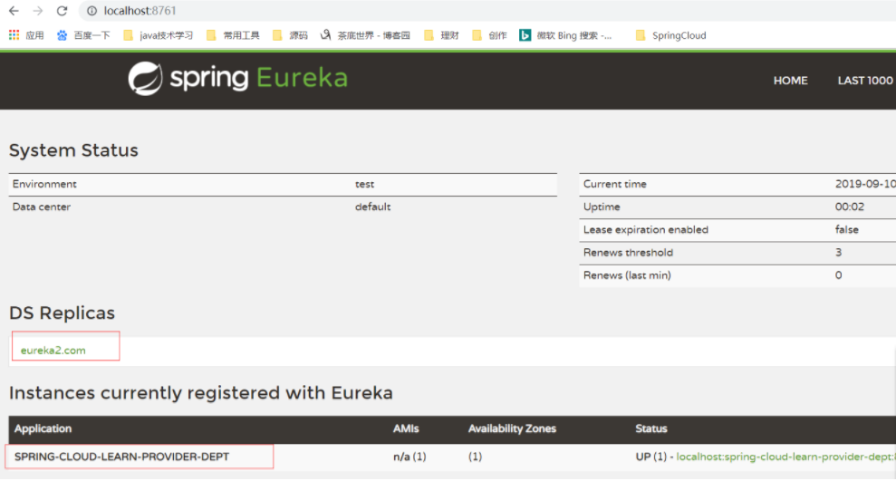

原文连接:https://www.cnblogs.com/yuanqinnan/p/11530737.html
上一篇使用了Eureka与Ribbon组件做了最简单的的服务注册与发现，我们知道Eureka是实现服务治理中心的组件，但是上一篇Eureka没有实现集群，这样没有保证到Eureka Server的高可用。
理论上来讲，因为服务消费者本地缓存了服务提供者的地址，即使Eureka Server宕机，也不会影响服务之间的调用，但是一旦新服务上线，已经在缓存在本地的服务提供者不可用了，服务消费者也无法知道，所以保证Eureka Server的高可用还是很有必要的。
那我们先来搭建一个Eureka的集群
一、Eureka集群配置
要做集群，我们想到肯定是增加一台服务器，那怎么让服务器之间产生关系，先让他们相互注册，在修改之前，我们为了区分服务器名称，先修改下hosts文件,增加下面一段：
127.0.0.1 eureka1.com
127.0.0.1 eureka2.com然后修改下之前spring-cloud-learn-eureka 项目的配置文件，主要修改的是注册的地址：
spring:
application:
name: spring-cloud-learn-eureka
server:
port: 8761
eureka:
instance:
hostname: eureka1.com
client:
#表示是否将自己注册到Eureka Server，默认为true。
registerWithEureka: false
#表示是否从Eureka Server获取注册信息，默认为true。
fetchRegistry: false
serviceUrl:
defaultZone: http://eureka2.com:8762/eureka/这个时候我们启动此项目，并同时启动服务提供者spring-cloud-learn-provider-dept，这里其实跟之前都没什么区别，服务顺利的注册进去：

这个时候我们修改spring-cloud-learn-eureka的配置，即再启动一个eureka server ：
spring:
application:
name: spring-cloud-learn-eureka
server:
port: 8762
eureka:
instance:
hostname: eureka2.com
client:
#表示是否将自己注册到Eureka Server，默认为true。
registerWithEureka: false
#表示是否从Eureka Server获取注册信息，默认为true。
fetchRegistry: false
serviceUrl:
defaultZone: http://eureka1.com:8761/eureka/
这个时候我们发现，第二台服务也注册进来了，是因为这两个Eureka服务器互相同步信息，这样就已经完成集群了。
接着实现，这个时候我们停掉eureka1服务，那eureka2中依然有服务，这说明挂掉一台服务器注册服务仍然可用，那我们在想想，如果我们重启服务提供者spring-cloud-learn-provider-dept会发生什么呢？
启动的时候，我们可以看到控制台是会报错误的，因为在spring-cloud-learn-provider-dept我们只向eureka1进行了注册，那此时eureka1停掉之后找不到注册地址，就会报错，但是只是刷新http://eureka2.com:8762/，我们发现此时服务提供者依然存在，这个是因为的自我保护机制。
如果我们重启eureka2服务，那这个时候就会发现此时spring-cloud-learn-provider-dept 就没有了，这个也很好理解，在启动时两个服务会互相同步消息，而这个时候服务提供者未注册到eureka1，那eureka2启动也是没有效果的，为了解决这个问题，那就让服务提供者分别向两台eureka服务器进行注册：
spring:
application:
name: spring-cloud-learn-provider-dept
server:
port: 8763
eureka:
client:
serviceUrl:
defaultZone: http://eureka1.com:8761/eureka/,http://eureka2.com:8762/eureka/Eureka与ZooKeeper的主要区别在CAP原则的选择上，CAP原则是指的是在一个分布式系统中，Consistency（一致性）、 Availability（可用性）、Partition tolerance（分区容错性），三者不可兼得（我们常说的鱼和熊掌不可兼得）。CAP 原则也是 NoSQL 数据库的基石。
-
一致性（Consistency，C）：在分布式系统中的所有数据备份，在同一时刻是否同样的值。（等同于所有节点访问同一份最新的数据副本）。
-
可用性（Availability，A）：在一个分布式系统的集群中一部分节点故障后，该集群是否还能够正常响应客户端的读写请求。（对数据更新具备高可用性）。
-
分区容错性（Partition tolerance，P）：大多数的分布式系统都分布在多个子网络中，而每个子网络就叫做一个区（partition）。分区容错的意思是，区间通信可能失败。在一个分布式系统中一般分区容错是无法避免的，因此可以认为 CAP 中的 P 总是成立的。CAP 理论告诉我们，在 C 和 A 之间是无法同时做到。
这个时候Eureka选择了 AP，在刚刚的集群配置中,Eureka Server 采用的是Peer to Peer 对等通信。这是一种去中心化的架构（参看：微服务与微服务架构思想与原则），无 master/slave 之分，每一个 Peer 都是对等的。在这种架构风格中，节点通过彼此互相注册来提高可用性，每个节点需要添加一个或多个有效的 serviceUrl 指向其他节点。每个节点都可被视为其他节点的副本。
在集群环境中如果某台 Eureka Server 宕机，Eureka Client 的请求会自动切换到新的 Eureka Server 节点上，当宕机的服务器重新恢复后，Eureka 会再次将其纳入到服务器集群管理之中。当节点开始接受客户端请求时，所有的操作都会在节点间进行复制（replicate To Peer）操作，将请求复制到该 Eureka Server 当前所知的其它所有节点中。
当一个新的 Eureka Server 节点启动后，会首先尝试从邻近节点获取所有注册列表信息，并完成初始化。Eureka Server 通过 getEurekaServiceUrls() 方法获取所有的节点，并且会通过心跳契约的方式定期更新。默认情况下，如果 Eureka Server 在一定时间内没有接收到某个服务实例的心跳（默认周期为30秒），Eureka Server 将会注销该实例（默认为90秒，如果某个 eureka.instance.lease-expiration-duration-in-seconds 进行自定义配置）。当 Eureka Server 节点在短时间内丢失过多的心跳时，那么这个节点就会进入自我保护模式。
与 Eureka 有所不同，Zookeeper 在设计时就紧遵CP原则，即任何时候对 Zookeeper 的访问请求能得到一致的数据结果，同时系统对网络分割具备容错性，但是 Zookeeper 不能保证每次服务请求都是可达的。从 Zookeeper 的实际应用情况来看，在使用 Zookeeper 获取服务列表时，如果此时的 Zookeeper 集群中的 Leader 宕机了，该集群就要进行 Leader 的选举，又或者 Zookeeper 集群中半数以上服务器节点不可用（例如有三个节点，如果节点一检测到节点三挂了 ，节点二也检测到节点三挂了，那这个节点才算是真的挂了），那么将无法处理该请求。所以说，Zookeeper 不能保证服务可用性。
当然，在大多数分布式环境中，尤其是涉及到数据存储的场景，数据一致性应该是首先被保证的，这也是 Zookeeper 设计紧遵CP原则的另一个原因。但是对于服务发现来说，情况就不太一样了，针对同一个服务，即使注册中心的不同节点保存的服务提供者信息不尽相同，也并不会造成灾难性的后果。因为对于服务消费者来说，能消费才是最重要的，消费者虽然拿到可能不正确的服务实例信息后尝试消费一下，也要胜过因为无法获取实例信息而不去消费，导致系统异常要好。
三、Ribbon介绍
Ribbon是负责客户端负载均衡的工具，与Nginx的作用类似，负载均衡应该大部分开发都是知道的，不清楚的百度学习一波。
简单的说，Ribbon是Netflix发布的开源项目，主要功能是提供客户端的软件负载均衡算法，将Netflix的中间层服务连接在一起。Ribbon客户端组件提供一系列完善的配置项如连接超时，重试等。简单的说，就是在配置文件中列出Load Balancer（简称LB）后面所有的机器，Ribbon会自动的帮助你基于某种规则（如简单轮询，随机连接等）去连接这些机器。我们也很容易使用Ribbon实现自定义的负载均衡算法。
Ribbon的配置在上一篇中已经给出，实现也是非常的简单，主要看几种负载均衡算法：
| 策略描述 | 实现说明 | |
|---|---|---|
| BestAvailableRule | 选择一个最小的并发请求的server | 逐个考察Server，如果Server被tripped了，则忽略，在选择其中ActiveRequestsCount最小的server |
| AvailabilityFilteringRule | 过滤掉那些因为一直连接失败的被标记为circuit tripped的后端server，并过滤掉那些高并发的的后端server（active connections 超过配置的阈值） | 使用一个AvailabilityPredicate来包含过滤server的逻辑，其实就就是检查status里记录的各个server的运行状态 |
| WeightedResponseTimeRule | 根据相应时间分配一个weight，相应时间越长，weight越小，被选中的可能性越低。 | 一个后台线程定期的从status里面读取评价响应时间，为每个server计算一个weight。Weight的计算也比较简单responsetime 减去每个server自己平均的responsetime是server的权重。当刚开始运行，没有形成statas时，使用roubine策略选择server。 |
| RetryRule | 对选定的负载均衡策略机上重试机制。 | 在一个配置时间段内当选择server不成功，则一直尝试使用subRule的方式选择一个可用的server |
| RoundRobinRule | roundRobin方式轮询选择server | 轮询index，选择index对应位置的server |
| RandomRule | 随机选择一个server | 在index上随机，选择index对应位置的server |
| ZoneAvoidanceRule | 复合判断server所在区域的性能和server的可用性选择server | 使用ZoneAvoidancePredicate和AvailabilityPredicate来判断是否选择某个server，前一个判断判定一个zone的运行性能是否可用，剔除不可用的zone（的所有server），AvailabilityPredicate用于过滤掉连接数过多的Server。 |
当想要修改负载均衡的策略时，直接返回IRule实现即可，例：
@Bean
public IRule myRule(){
return new RandomRule();
}Feign 是一个声明式的伪 Http 客户端，它使得写 Http 客户端变得更简单。使用 Feign，只需要创建一个接口并注解。它具有可插拔的注解特性，可使用 Feign 注解和 JAX-RS 注解。Feign 支持可插拔的编码器和解码器。Feign 默认集成了 Ribbon，并和 Eureka 结合，默认实现了负载均衡的效果。
Feign旨在使编写Java Http客户端变得更容易。前面在使用Ribbon+RestTemplate时，利用RestTemplate对http请求的封装处理，形成了一套模版化的调用方法。但是在实际开发中，由于对服务依赖的调用可能不止一处，往往一个接口会被多处调用，所以通常都会针对每个微服务自行封装一些客户端类来包装这些依赖服务的调用。所以，Feign在此基础上做了进一步封装，由他来帮助我们定义和实现依赖服务接口的定义。在Feign的实现下，我们只需创建一个接口并使用注解的方式来配置它(以前是Dao接口上面标注Mapper注解,现在是一个微服务接口上面标注一个Feign注解即可)，即可完成对服务提供方的接口绑定，简化了使用Spring cloud Ribbon时，自动封装服务调用客户端的开发量。
来实践感受下：跟之前一样再创建一个项目spring-cloud-learn-consumer-dept-feign,并新建pom.xml文件，手动添加到maven中：
<?xml version="1.0" encoding="UTF-8"?>
<project xmlns="http://maven.apache.org/POM/4.0.0" xmlns:xsi="http://www.w3.org/2001/XMLSchema-instance"
xsi:schemaLocation="http://maven.apache.org/POM/4.0.0 http://maven.apache.org/xsd/maven-4.0.0.xsd">
<modelVersion>4.0.0</modelVersion>
<parent>
<groupId>com.yuanqinnan</groupId>
<artifactId>spring-cloud-learn-parent</artifactId>
<version>1.0.0-SNAPSHOT</version>
</parent>
<artifactId>spring-cloud-learn-consumer-dept-feign</artifactId>
<packaging>jar</packaging>
<dependencies>
<!-- Spring Boot Begin -->
<dependency>
<groupId>org.springframework.boot</groupId>
<artifactId>spring-boot-starter-web</artifactId>
</dependency>
<dependency>
<groupId>org.springframework.boot</groupId>
<artifactId>spring-boot-starter-tomcat</artifactId>
</dependency>
<dependency>
<groupId>org.springframework.boot</groupId>
<artifactId>spring-boot-starter-test</artifactId>
<scope>test</scope>
</dependency>
<!-- Spring Boot End -->
<!-- Spring Cloud Begin -->
<dependency>
<groupId>org.springframework.cloud</groupId>
<artifactId>spring-cloud-starter-netflix-eureka-server</artifactId>
</dependency>
<dependency>
<groupId>org.springframework.cloud</groupId>
<artifactId>spring-cloud-starter-openfeign</artifactId>
</dependency>
<!-- Spring Cloud End -->
</dependencies>
</project>创建启动类：
@SpringBootApplication
@EnableDiscoveryClient
@EnableFeignClients
public class ConsumerDeptFeignApplication {
public static void main(String[] args) {
SpringApplication.run(ConsumerDeptFeignApplication.class, args);
}
}application.yml：
spring:
application:
name: spring-cloud-learn-consumer-dept-feign
server:
port: 8765
eureka:
client:
serviceUrl:
defaultZone: http://localhost:8761/eureka/现在就是调用服务的操作，添加一个部门服务：
@FeignClient(value = "spring-cloud-learn-provider-dept")
public interface DeptService {
@RequestMapping(value = "hi", method = RequestMethod.GET)
String sayHi(@RequestParam(value = "message") String message);
}这里添加的@FeignClient的注解里面的value属性就是调用服务的名称，而里面的方法的写法与WebMVC的写法很类似，相当于调用服务的方法
然后再创建一个controller，，然后创建方法调用
@RestController
public class DeptController {
@Autowired
private DeptService deptService;
@RequestMapping(value = "hi", method = RequestMethod.GET)
public String sayHi(@RequestParam String message) {
return deptService.sayHi(message);
}
}